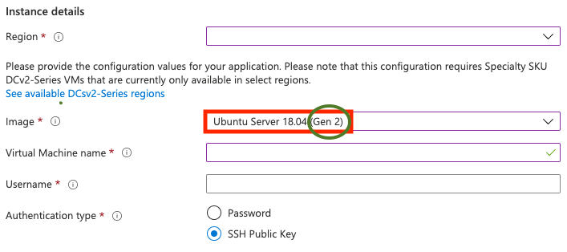
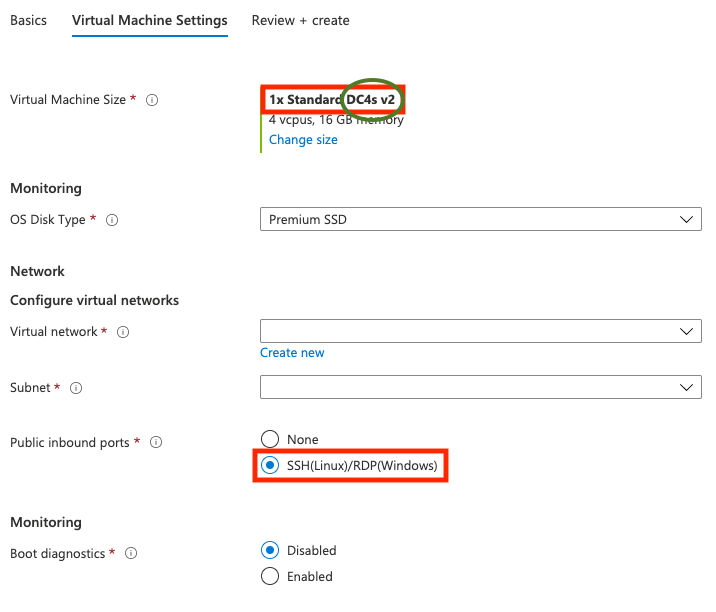

Deploying to Azure¶
Important
Azure does not guarantee access to the same machine on reboot, secrets that are encrypted for a particular enclave may be lost. Consider using the Azure Key Vault to prevent this. At time of writing, access to Azure Key Vault is not a part of the Conclave SDK (v1.1).
Attestation¶
Microsoft Azure provides ready-made VMs that support the latest attestation protocols. This document explains the background and provides a walkthrough showing how to get such a VM.
Background: The DCAP protocol¶
Note
If you just want to deploy to Azure as quickly as possible you can skip this section.
There are two protocols for establishing what code is running in an enclave: EPID and DCAP. EPID is an older protocol designed for consumer applications, and as such includes some sophisticated privacy features. For servers where the IP address doesn't need to be hidden (because it's public in DNS to begin with), these features aren't helpful and thus there is DCAP (datacenter attestation primitives). DCAP requires more modern hardware but is otherwise simpler and more robust. You may also see DCAP referred to as "ECDSA attestation".
Important
Intel does not provide EPID attestation support on any Xeon Scalable processors. This includes Ice Lake Xeon CPUs and any future generations. Please ensure you are using DCAP attestation on these platforms.
In DCAP repeating attestation requests aren't forwarded to Intel, but rather served from a cache. A newly installed machine obtains a machine certificate from Intel via the cache which may then be persisted to disk. All this is automated for you.
Because caches are run by cloud providers DCAP supports vendor-specific plugins. Intel provides a default one which requires a subscription.
Azure provides a DCAP plugin that does not require a subscription. Conclave bundles and uses that plugin by default. The Azure caches are open to the public internet and can actually be used from anywhere. Azure Confidential Computing instances (DC4s_v2) come pre-provisioned for DCAP and as Conclave comes with the necessary libraries bundled, you don't need to do any further setup.
Machine setup¶
You need to create an Ubuntu 18.04 LTS Gen2 VM from the confidential compute line (named like this: DC?s_v2) where the question mark is the size. Other distributions should work as long as they are on these VMs, but we haven't tested them.
The VM must be created inside a resource group. You may use an existing resource group or create one with the following command:
1 | |
Now create the VM.
1 2 3 4 5 | |
VM-NAME is the name you choose for the VM and GROUP-NAME is the name of the chosen resource group.
Make sure you do the following when creating your Azure Confidential Computing VM:
- Use the
Ubuntu Server 18.04 (Gen2)image - Pick a size that's got plenty of RAM. For example, you might want to click "Change size" to find
DC4s_v2type - Ensure that the public inbound ports are open for SSH access


Just in case, once you have logged onto the VM:
- Check that the
enclavedevice is present in the/dev/sgx/directory - Check driver version
dmesg | grep sgx. Conclave requires driver version 1.33+ - If either check fails:
- Download the driver
- Follow the install instructions
You may need to add your user into sgx_prv group to give it access to SGX.
1 | |
DCAP Plugin¶
In order to perform attestation using DCAP Conclave needs a way to gather information about the platform the enclave is hosted on. This information provides proof from Intel that a system supports SGX and that it is patched and up to date.
DCAP is designed to work on many different server topologies, therefore rather than directly connecting to Intel services to retrieve this information, the cloud vendor or owner of the SGX system must provide a DCAP client plugin that will provide the required information. Intel provide a generic DCAP client plugin as part of the DCAP runtime. In order to use this you also need to set up a Provisioning Certificate Caching Service (PCCS). Intel provide an example and some instructions here. If you would like to use Intel's reference implementation of their PCCS service then there may be additional work required to provide data in the correct format for Conclave. Please contact R3 support if you need help in getting this setup.
Microsoft has written a DCAP client plugin that works with its Azure Confidential Compute virtual machines. In fact, it also works outside of Azure for single CPU systems but this may not always be the case.
Our SDK comes bundled with the Azure client plugin.
The bundled version will only be used if no other plugin has been found on the system.
The runtime will use the first .so it encounters in the search order below:
1 2 3 4 | |
Important
The bundled DCAP Azure client plugin works with all current generation Azure confidential VMs as well as existing CPUs. However, if Azure extends their offerings to include new platforms, or if you attempt to use a new generation system such as a multi-CPU Ice Lake platform then the bundled Azure client plugin may not work and you might see an error when attempting to load your enclave. In this case follow the instructions below to build/install an updated version of the Azure client plugin that supports the platform.
You may want to set the Azure DCAP client logging level to FATAL as the default setting is fairly verbose:
1 | |
If you would like to configure the DCAP plugin yourself, keep reading. If you are using bundled version, you can skip the rest of this section.
Azure client plugin¶
-
Identify the currently installed DCAP client plugin. It will always have one of the following names:
libdcap_quoteprov.so.1orlibdcap_quoteprov.so. You might find other similarly named files, but they won't be used as a plugin.1 2
ls /usr/lib/x86_64-linux-gnu/libdcap_quoteprov.so* ls /usr/lib/libdcap_quoteprov.so* -
If you already have the Azure plugin installed then it will contain the text 'AZDCAP'.
1 2
grep AZDCAP /usr/lib/x86_64-linux-gnu/libdcap_quoteprov.so* grep AZDCAP /usr/lib/libdcap_quoteprov.so* - If the Azure plugin is not currently installed then:
- You can build it from source.
- Or extract from a pre-built package provided by Microsoft. E.g. for Ubuntu 18.04 via the command below (only libdcap_quoteprov.so is required).
1wget https://packages.microsoft.com/ubuntu/18.04/prod/pool/main/a/az-dcap-client/az-dcap-client_1.8_amd64.deb && ar x az-dcap-client_1.8_amd64.deb data.tar.xz && tar xvJf data.tar.xz --transform='s/.*\///' ./usr/lib/libdcap_quoteprov.so && rm az-dcap-client_1.8_amd64.deb data.tar.xz
- The preferred name and location of the DCAP client plugin is
/usr/lib/x86_64-linux-gnu/libdcap_quoteprov.so.1.1 2
cp $(Azure-DCAP-Client)/libdcap_quoteprov.so /usr/lib/x86_64-linux-gnu/libdcap_quoteprov.so.azure ln -sf /usr/lib/x86_64-linux-gnu/libdcap_quoteprov.so.azure /usr/lib/x86_64-linux-gnu/libdcap_quoteprov.so.1 - Set the Azure DCAP client logging level to FATAL as desired.
1export AZDCAP_DEBUG_LOG_LEVEL=FATAL
Intel DCAP plugin¶
Please read the installation instructions in the "Install the DCAP packages" section of the installation guide.
Note
If you happen to have the Intel DCAP plugin installed alongside the Azure one, bear in mind that running apt update might reset the symlink above to point to Intel's plugin.
Using Docker container(s)¶
If you plan to use a Docker container with DCAP hardware, you must map two different device files like this:
1 | |
Note
Azure offers a "Confidential Kubernetes" service. At this time we haven't tested Conclave with that. If you try it, let us and the community know if it works (conclave-discuss@groups.io)
Running a Conclave Application¶
Once the machine is set up, you can follow the Compiling and running tutorial to run the hello-world sample.
The sample is configured to use DCAP attestation with the
following line in Host.java
1 | |
DCAP doesn't require any specific API keys or parameters, so just creating the empty object is sufficient to choose it.